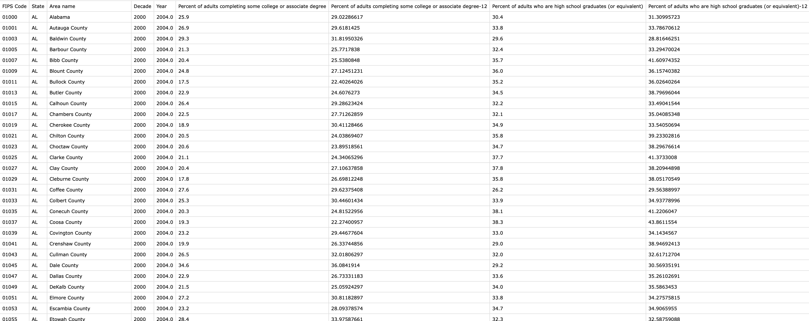
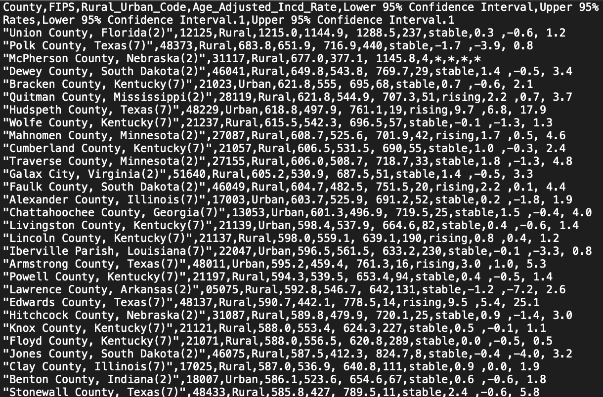
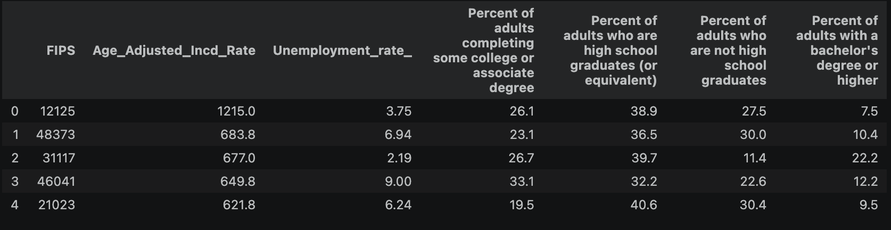
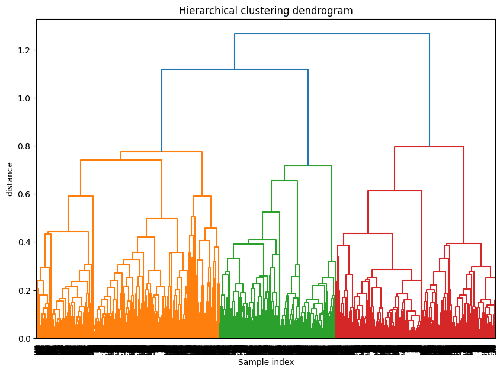
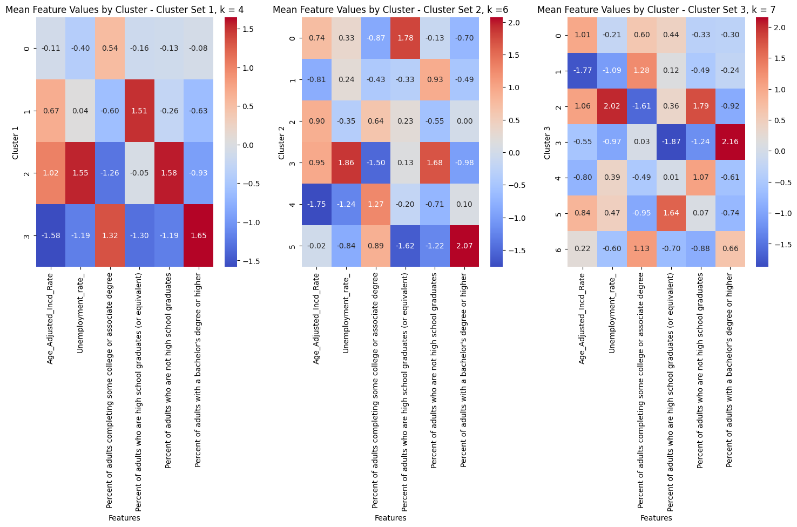
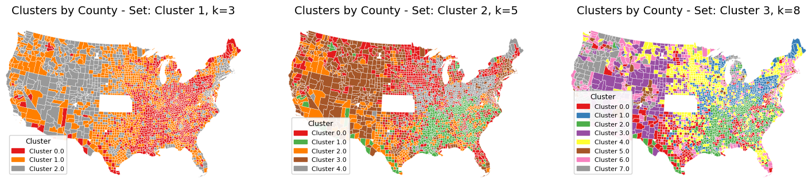
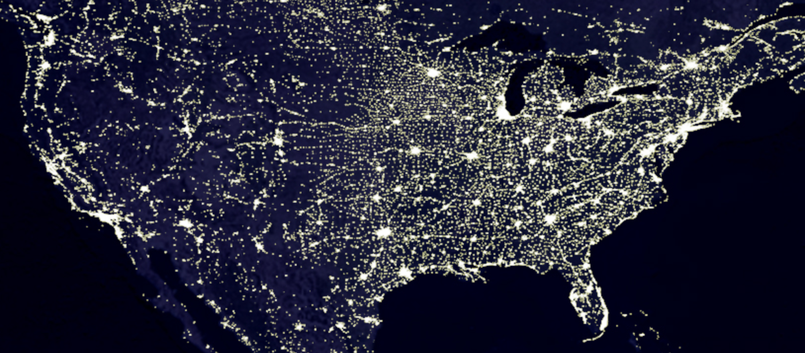

Clustering
Overview
Clustering is an unsupervised machine learning process that creates and partitions groups of data points based on similarity criteria
e.g. minimized distance between points, or shared features. These methods are unsupervised, meaning the data is not labeled.
Partitional clustering methods like k-means divide the data such that each sample/point belongs to one cluster, which is shared by the points
it is most similar to. Similarity is often defined as a minimized distance metric, such as the Euclidean distance (straight-line) between poitns,
or other vector norms, for continuous data. For categorical data, similarity might be defined by shared features,
which can be measured by metrics like Hamming distance or Levenstein distance.
Heirarchical clustering creates a "dendrogram" of cluster relationships, where a predicate relationship exists
between child and parent cluster (i.e., a child cluster is also a member of the parent cluster). This necessitates calculating similarity between
clusters as well as the individual points, which can be done by methods such as single-linkage (the cluster distance being defined as the shortest distance between two points, one in each cluster),
complete-linkage (greatest distance between points in the clusters), or average-linkage (mean distance between, i.e each point's distance to each other point, averaged).
K-means vs Hierarchical Clustering
While these two methods can help achieve the same objective, there are elements that make them suited for different scenarios. K-means is generally faster and works well with large datasets, but requires specifying the number of clusters in advance.
Hierarchical clustering, on the other hand, does not require specifying the number of clusters and indeed can be used to make educated guesses about the optimal number of clusters,
but can be computationally prohibitive, or at least difficult, for even moderately sized datasets in practice.


Data Prep
To examine incidence data with socioeconomic features, the per-county data for indcidence rates, unemployment, and education were merged together, joining on FIPS. As clustering necessitates
numeric data, all the categorical features were dropped, and rows with missing values were dropped.
  
The data was then standardized using the StandardScaler from sklearn, prior to running K-means and Heirarchical clustering.
Code
The Jupyter notebook can be found here. The HTML version can be found here.
Results
The intial heirarchical clustering dendrogram suggested that 3, 5, or 9 cluster could be reasonable (we can see if we drew a line across the dendrogram at the main points of cluster separation, we would count that many lines.)
  
{kind=link}
{kind=link}
Conclusions
In each set of clusters, we can see that one cluster emerges with a high "percent of adults with a bachelor's degree or higher" , low unemployment, and low cancer incidence- cluster 2 on the 3-cluster set, cluster 3 on the 5-cluster set,
and cluster 5 on the 7-cluster set. (Note that the cluster numbers are 0-indexed on the charts; this is maintained here). We also see clusters in each set that have high unemployment, high "percentage of adults who are not high school graduates",
and high cancer incidence (cluster 2 in the first, k=4, cluster 3 in the middle,k=6, and cluster 2 in the k=7 set). The other clusters have more mixed profiles. It is interesting that after adding more than 4 clusters, the lowest cancer incidence
and the highest "percent of adults with a bachelor's degree or higher" separate, and while that education marker is still associated with low cancer incidence, it's not the lowest.

When we turn to the maps it gets really interesting- there's a cluster that emerges in the mountain west that remains through out all the cluster sets that is characterized by the lowest cancer incidence (clusters 2, 2, and 3 from left to right on the maps graphic).
At first glance, it seems to reflect counties that are rural- a similar pattern to the "unlit" areas on a nighttime light map:
{kind=link}
Certainly there are other rural areas across the rest of the US, but they don't seem to fall into the same cluster as the mountain west rural areas. Perhaps this could be due to the much larger contiguous tracts of rural land out in the west reducing access to health care due to difficulty to reach care centers, and thus diagnoses and reporting rates are lower?
Incorporating data like medical center access and population density might lend some insight into how the more mixed clusters group.